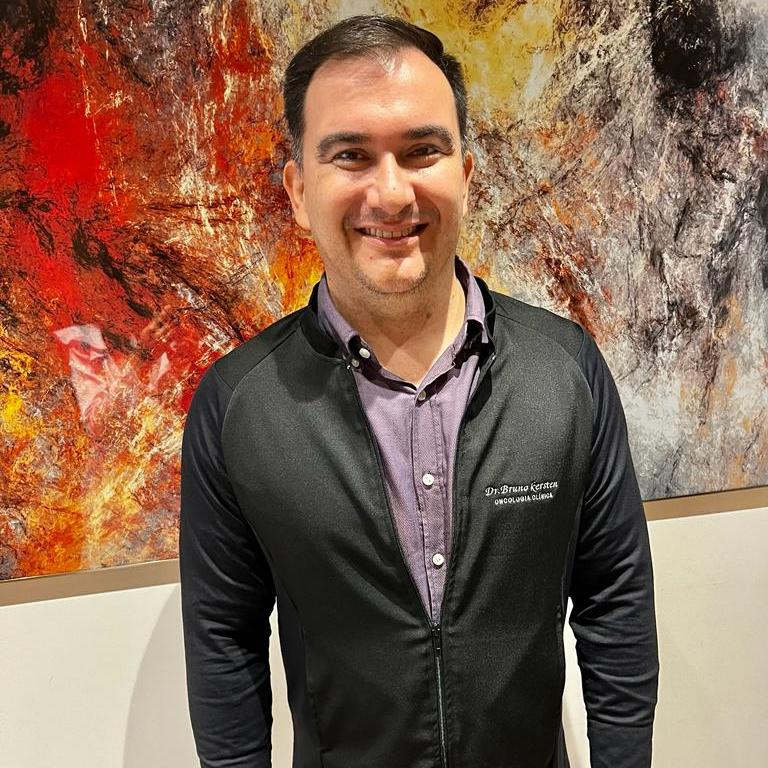

Dr. Bruno Guilherme Kersten

Apresentação Acadêmica
Graduado em Medicina pela Fundação Técnico Educacional Souza Marques (FTESM) em 2000, o Dr. Bruno Guilherme Kersten concluiu Residência Médica em Clínica Médica pelo Complexo Hospitalar do Mandaqui (2002) e Residência em Cancerologia Clínica pela prestigiada Fundação Dr. Amaral Carvalho (2004).
Possui Registro de Qualificação de Especialista (RQE) em Oncologia Clínica pelo CREMESP e atua como Responsável Técnico (RT) no Centro de Tratamento Anti-Neoplásico (CTA) da Unimed Araçatuba. Também se destaca como Médico Speaker Regional para indústrias farmacêuticas globais de alta inovação.
Formação Acadêmica e Residências
Residência Médica em Oncologia Clínica
Fundação Dr. Amaral Carvalho (FAMC) — Jaú, SP.
Residência Médica em Clínica Médica
Conjunto Hospitalar do Mandaqui (CHM) — São Paulo, SP.
Graduação em Medicina
Fundação Técnico Educacional Souza Marques (FTESM) — Rio de Janeiro, RJ.
Atuação Profissional e Vínculos
Responsável Técnico (RT) e Oncologista Clínico
Centro de Tratamento Anti-Neoplásico (CTA) da Unimed Araçatuba - SP. Atuação também em comitês de especialidades, ética médica e cuidados paliativos.
Médico Oncologista
AMAVITA Clínica Oncológica e Santa Casa de Misericórdia de Araçatuba - SP.
Médico Speaker e Consultor Científico
Atuação destacada junto às empresas farmacêuticas: Roche, Lilly, AstraZeneca, Astellas, Bayer, Daiichi-Sankyo e Novartis.
Sociedades Científicas e Registros
Registro de Qualificação de Especialista (RQE)
Especialista em Oncologia Clínica registrado pelo CREMESP (2022).
Associações Nacionais e Internacionais
Membro Titular da Sociedade Brasileira de Oncologia Clínica (SBOC), da Sociedade Americana de Oncologia Clínica (ASCO) e da Associação Paulista de Medicina (APM).
Produção Bibliográfica (Artigos em Periódicos)
Metastatic non-small cell lung cancer in Brazil: treatment heterogeneity in routine clinical practice
YOUNES, Riad Naim ; KERSTEN, Bruno G. ; ANELLI, Agnaldo et al. Publicado em: Clinics, v. 62, p. 397-404, 2007.
Conferências, Aulas e Palestras Recentes
- 2024: Discussão dos Avanços no Tratamento do Câncer de Ovário.
- 2023: O papel da cirurgia e do tratamento de manutenção em 1ª linha no câncer de ovário.
- 2023: Novas abordagens no tratamento do câncer de mama HER2+ e Kisqali no câncer de mama metastático RH+/HER2-.
- 2023: Medicina de Precisão em CPNPC (Câncer de Pulmão) e Stivarga no CRCm.
- 2022: Os benefícios da terapia alvo no paciente FGFR do carcinoma urotelial metastático e estudos ADAURA em CPNPC.
- 2015 - 2019: Organização e palestras em Campanhas de Prevenção Oncológica (Outubro Rosa, Novembro Azul e Circuitos da Santa Casa).
Entrevistas e Programas na Mídia
- 2020: Hospital Unimed realiza procedimento inédito em paciente de quimioterapia (Programa de rádio/TV).
- 2013 - 2018: Diversas entrevistas sobre rastreamento de câncer de próstata (Novembro Azul), detecção precoce e orientação sobre prevenção oncológica.
Currículo Lattes (CNPq)
ID Lattes: 0852760636089477
Para conferir o histórico completo de participações em congressos internacionais (ASCO, SBOC) e demais produções técnicas, acesse a plataforma oficial:
Contato e Localização
Endereço e atendimento
Endereço:
Av. Paulista, 1000 — Sala 101
Bela Vista, São Paulo - SP, 01310-100
Horário de funcionamento:
Segunda a Sexta: 08h às 18h
Contato direto:
Telefone: (11) 3333-3333
WhatsApp: (11) 99999-9999
E-mail: contato@kerstenoncologia.com.br
Ponto de referência:
Próximo à estação de metrô e com estacionamento no local.